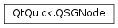

QSGNode¶
Inherited by: QSGBasicGeometryNode, QSGGeometryNode, QSGSimpleRectNode, QSGSimpleTextureNode, QSGClipNode, QSGTransformNode, QSGOpacityNode
Synopsis¶
Functions¶
- def
appendChildNode(node) - def
childAtIndex(i) - def
childCount() - def
clearDirty() - def
dirtyState() - def
firstChild() - def
flags() - def
insertChildNodeAfter(node, after) - def
insertChildNodeBefore(node, before) - def
lastChild() - def
markDirty(bits) - def
nextSibling() - def
parent() - def
prependChildNode(node) - def
previousSibling() - def
removeAllChildNodes() - def
removeChildNode(node) - def
reparentChildNodesTo(newParent) - def
setFlag(arg__1[, arg__2=true]) - def
setFlags(arg__1[, arg__2=true]) - def
type()
Virtual functions¶
- def
isSubtreeBlocked() - def
preprocess()
Detailed Description¶
The
PySide2.QtQuick.QSGNodeclass is the base class for all nodes in the scene graph.The
PySide2.QtQuick.QSGNodeclass can be used as a child container. Children are added with thePySide2.QtQuick.QSGNode.appendChildNode(),PySide2.QtQuick.QSGNode.prependChildNode(),PySide2.QtQuick.QSGNode.insertChildNodeBefore()andPySide2.QtQuick.QSGNode.insertChildNodeAfter(). The order of nodes is important as geometry nodes are rendered according to their ordering in the scene graph.The scene graph nodes contains a mechanism to describe which parts of the scene has changed. This includes the combined matrices, accumulated opacity, changes to the node hierarchy, and so on. This information can be used for optimizations inside the scene graph renderer. For the renderer to properly render the nodes, it is important that users call
QSGNode.markDirty()with the correct flags when nodes are changed. Most of the functions on the node classes will implicitly callPySide2.QtQuick.QSGNode.markDirty(). For example,QSGNode.appendChildNode()will callPySide2.QtQuick.QSGNode.markDirty()passing inQSGNode.DirtyNodeAdded.If nodes change every frame, the
PySide2.QtQuick.QSGNode.preprocess()function can be used to apply changes to a node for every frame it is rendered. The use ofPySide2.QtQuick.QSGNode.preprocess()must be explicitly enabled by setting theQSGNode.UsePreprocessflag on the node.The virtual
PySide2.QtQuick.QSGNode.isSubtreeBlocked()function can be used to disable a subtree all together. Nodes in a blocked subtree will not be preprocessed() and not rendered.Note
All classes with QSG prefix should be used solely on the scene graph’s rendering thread. See Scene Graph and Rendering for more information.
-
class
PySide2.QtQuick.QSGNode¶ -
class
PySide2.QtQuick.QSGNode(type) Parameters: type – PySide2.QtQuick.QSGNode.NodeTypeConstructs a new node
Constructs a new node with the given node type.
-
PySide2.QtQuick.QSGNode.NodeType¶ Can be used to figure out the type of node.
Constant Description QSGNode.BasicNodeType The type of PySide2.QtQuick.QSGNodeQSGNode.GeometryNodeType The type of PySide2.QtQuick.QSGGeometryNodeQSGNode.TransformNodeType The type of PySide2.QtQuick.QSGTransformNodeQSGNode.ClipNodeType The type of PySide2.QtQuick.QSGClipNodeQSGNode.OpacityNodeType The type of PySide2.QtQuick.QSGOpacityNodeQSGNode.RenderNodeType The type of QSGRenderNodeSee also
-
PySide2.QtQuick.QSGNode.Flag¶ The enum describes flags on the
PySide2.QtQuick.QSGNodeConstant Description QSGNode.OwnedByParent The node is owned by its parent and will be deleted when the parent is deleted. QSGNode.UsePreprocess The node’s virtual PySide2.QtQuick.QSGNode.preprocess()function will be called before rendering starts.QSGNode.OwnsGeometry Only valid for PySide2.QtQuick.QSGGeometryNodeandPySide2.QtQuick.QSGClipNode. The node has ownership over thePySide2.QtQuick.QSGGeometryinstance and will delete it when the node is destroyed or a geometry is assigned.QSGNode.OwnsMaterial Only valid for PySide2.QtQuick.QSGGeometryNode. The node has ownership over the material and will delete it when the node is destroyed or a material is assigned.QSGNode.OwnsOpaqueMaterial Only valid for PySide2.QtQuick.QSGGeometryNode. The node has ownership over the opaque material and will delete it when the node is destroyed or a material is assigned.QSGNode.InternalReserved Reserved for internal use.
-
PySide2.QtQuick.QSGNode.DirtyStateBit¶ Used in
QSGNode.markDirty()to indicate how the scene graph has changed.Constant Description QSGNode.DirtyMatrix The matrix in a PySide2.QtQuick.QSGTransformNodehas changed.QSGNode.DirtyNodeAdded A node was added. QSGNode.DirtyNodeRemoved A node was removed. QSGNode.DirtyGeometry The geometry of a PySide2.QtQuick.QSGGeometryNodehas changed.QSGNode.DirtyMaterial The material of a PySide2.QtQuick.QSGGeometryNodehas changed.QSGNode.DirtyOpacity The opacity of a PySide2.QtQuick.QSGOpacityNodehas changed.QSGNode.DirtySubtreeBlocked The subtree has been blocked. See also
-
PySide2.QtQuick.QSGNode.appendChildNode(node)¶ Parameters: node – PySide2.QtQuick.QSGNodeAppends
nodeto this node’s list of children.Ordering of nodes is important as geometry nodes will be rendered in the order they are added to the scene graph.
-
PySide2.QtQuick.QSGNode.childAtIndex(i)¶ Parameters: i – PySide2.QtCore.intReturn type: PySide2.QtQuick.QSGNodeReturns the child at index
i.Children are stored internally as a linked list, so iterating over the children via the index is suboptimal.
-
PySide2.QtQuick.QSGNode.childCount()¶ Return type: PySide2.QtCore.intReturns the number of child nodes.
-
PySide2.QtQuick.QSGNode.clearDirty()¶
-
PySide2.QtQuick.QSGNode.dirtyState()¶ Return type: PySide2.QtQuick.QSGNode.DirtyState
-
PySide2.QtQuick.QSGNode.firstChild()¶ Return type: PySide2.QtQuick.QSGNodeReturns the first child of this node.
The children are stored in a linked list.
-
PySide2.QtQuick.QSGNode.flags()¶ Return type: PySide2.QtQuick.QSGNode.FlagsReturns the set of flags for this node.
See also
-
PySide2.QtQuick.QSGNode.insertChildNodeAfter(node, after)¶ Parameters: - node –
PySide2.QtQuick.QSGNode - after –
PySide2.QtQuick.QSGNode
Inserts
nodeto this node’s list of children after the node specified withafter.Ordering of nodes is important as geometry nodes will be rendered in the order they are added to the scene graph.
- node –
-
PySide2.QtQuick.QSGNode.insertChildNodeBefore(node, before)¶ Parameters: - node –
PySide2.QtQuick.QSGNode - before –
PySide2.QtQuick.QSGNode
Inserts
nodeto this node’s list of children before the node specified withbefore.Ordering of nodes is important as geometry nodes will be rendered in the order they are added to the scene graph.
- node –
-
PySide2.QtQuick.QSGNode.isSubtreeBlocked()¶ Return type: PySide2.QtCore.boolReturns whether this node and its subtree is available for use.
Blocked subtrees will not get their dirty states updated and they will not be rendered.
The
PySide2.QtQuick.QSGOpacityNodewill return a blocked subtree when accumulated opacity is 0, for instance.
-
PySide2.QtQuick.QSGNode.lastChild()¶ Return type: PySide2.QtQuick.QSGNodeReturns the last child of this node.
The children are stored as a linked list.
-
PySide2.QtQuick.QSGNode.markDirty(bits)¶ Parameters: bits – PySide2.QtQuick.QSGNode.DirtyStateNotifies all connected renderers that the node has dirty
bits.
-
PySide2.QtQuick.QSGNode.nextSibling()¶ Return type: PySide2.QtQuick.QSGNodeReturns the node after this in the parent’s list of children.
The children are stored as a linked list.
-
PySide2.QtQuick.QSGNode.parent()¶ Return type: PySide2.QtQuick.QSGNodeReturns the parent node of this node.
-
PySide2.QtQuick.QSGNode.prependChildNode(node)¶ Parameters: node – PySide2.QtQuick.QSGNodePrepends
nodeto this node’s the list of children.Ordering of nodes is important as geometry nodes will be rendered in the order they are added to the scene graph.
-
PySide2.QtQuick.QSGNode.preprocess()¶ Override this function to do processing on the node before it is rendered.
Preprocessing needs to be explicitly enabled by setting the flag
QSGNode.UsePreprocess. The flag needs to be set before the node is added to the scene graph and will cause the function to be called for every frame the node is rendered.Warning
Beware of deleting nodes while they are being preprocessed. It is possible, with a small performance hit, to delete a single node during its own preprocess call. Deleting a subtree which has nodes that also use preprocessing may result in a segmentation fault. This is done for performance reasons.
-
PySide2.QtQuick.QSGNode.previousSibling()¶ Return type: PySide2.QtQuick.QSGNodeReturns the node before this in the parent’s list of children.
The children are stored as a linked list.
-
PySide2.QtQuick.QSGNode.removeAllChildNodes()¶ Removes all child nodes from this node’s list of children.
-
PySide2.QtQuick.QSGNode.removeChildNode(node)¶ Parameters: node – PySide2.QtQuick.QSGNodeRemoves
nodefrom this node’s list of children.
-
PySide2.QtQuick.QSGNode.reparentChildNodesTo(newParent)¶ Parameters: newParent – PySide2.QtQuick.QSGNodeReparents all nodes of this node to
newParent.
-
PySide2.QtQuick.QSGNode.setFlag(arg__1[, arg__2=true])¶ Parameters: - arg__1 –
PySide2.QtQuick.QSGNode.Flag - arg__2 –
PySide2.QtCore.bool
Sets the flag
fon this node ifenabledis true; otherwise clears the flag.See also
- arg__1 –
-
PySide2.QtQuick.QSGNode.setFlags(arg__1[, arg__2=true])¶ Parameters: - arg__1 –
PySide2.QtQuick.QSGNode.Flags - arg__2 –
PySide2.QtCore.bool
Sets the flags
fon this node ifenabledis true; otherwise clears the flags.See also
- arg__1 –
-
PySide2.QtQuick.QSGNode.type()¶ Return type: PySide2.QtQuick.QSGNode.NodeTypeReturns the type of this node. The node type must be one of the predefined types defined in
QSGNode.NodeTypeand can safely be used to cast to the corresponding class.
© 2018 The Qt Company Ltd. Documentation contributions included herein are the copyrights of their respective owners. The documentation provided herein is licensed under the terms of the GNU Free Documentation License version 1.3 as published by the Free Software Foundation. Qt and respective logos are trademarks of The Qt Company Ltd. in Finland and/or other countries worldwide. All other trademarks are property of their respective owners.